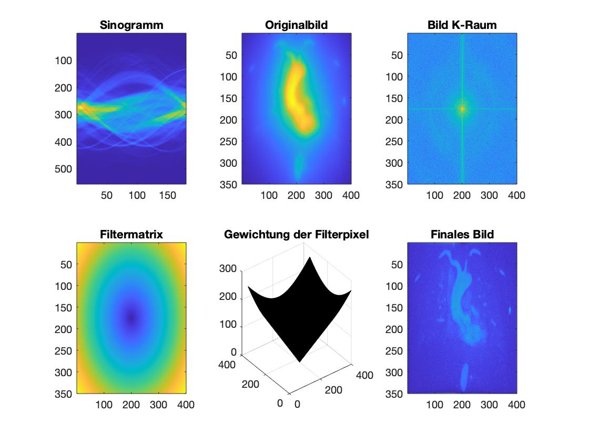

%%% CT Programm
%%% Rashid Katamesh
%%% Bildrekonstruktuieren
%%% 03.2020
%%% Beginn:
clear all ; close all; clc
%%% 0- Gegeben:
FOVx = 450;
FOVy = 400;
Mx = 400;
My = 350;
lang = 750;
Sino = load('Sinovivo.txt');
det = size(Sino,1); %557
Winkel = size(Sino,2); %180
lr = [-FOVx/2; FOVy/2]; %links oben vektor
dx = FOVx/Mx; % Aufloesung
dy = FOVy/My;
PSF_s = zeros(My,Mx);
clims = [0 265.7536];
nx = round(Mx/dx);
ny = round(My/dy);
Summe = zeros(My,Mx);
detek = lang/det;
lang/det
%%% 1- Rechenoperation: (Bildrekonstruktion):
for x = 1 : 400
for y = 1 : 350
for Ww = 1 : Winkel
delta = [x*dx ; -y*dy]; %[mm]: Physikalische Einheit
r = [lr(1)+delta(1) ; lr(2)+delta(2)]; %[mm]: Physikalische Einheit
p = (r(1)*cosd(Ww-1) + r(2)*sind(Ww-1)); %[mm]: Physikalische Einheit
pp = round(p+lang/2); % Umrechnung zum Intervall [0->750]
ppp = round(pp/detek); %index: Umstellung zu index
Summe(y,x) = Summe(y,x) + Sino(ppp,Ww); %Addieren zu vorherigen Werten
end
Bild(y,x) = Summe(y,x); %Das finale Bild
end
end
figure(1);
subplot(2,3,1); imagesc(Sino); title('Sinogramm'); hold on
subplot(2,3,2); imagesc(Bild); title('Originalbild'); hold on
%%% 2- 2x-Fourier fuer das Bild:
fbild = fftshift(fft2(Bild));
ffbild = log(1+abs(fbild));
subplot(2,3,3); imagesc(ffbild); title('Bild K-Raum'); hold on
%%% 3- Filtermatrix:>> Betrag k
for ii = 1:350
for jj = 1:400
w(ii,jj) = sqrt((ii-175)^2 + (jj-200)^2);
end
end
subplot(2,3,4); imagesc(w); title('Filtermatrix'); hold on
subplot(2,3,5); surf(w); title('Gewichtung der Filterpixel'); hold on
%%% 4- K-Raum vom Bild mit der Filter Multiplizieren:
Final1 = w .* fbild;
Final2 = ifft2(ifftshift(Final1));
Final3 = abs(Final2); %da complex douple
subplot(2,3,6); imagesc(Final3); title('Finales Bild'); hold off
the first image on the left side is the sinogram table which contains the raw information of intensity absorption of the CT beam through the human body which also represents the information of body parts and organs.
This transformation is done by C++ language with a filtering using MATLAB programm.
read more about CT image construction... 